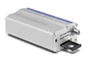
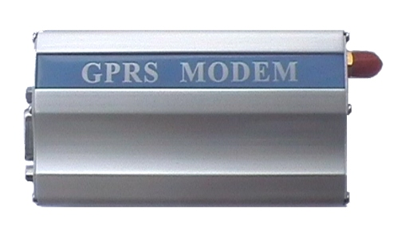
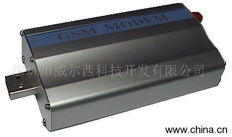

企业简介：
深圳方寸科技是一家专门从事无线数据传输设备和M2M系统的研发、制造、销售及服务的高科技公司，致力于为各行业用户提供专业的M2M系统及解决方案，目前公司已经自主拥有基于GPRS和CDMA网络的多款无线数传终端产品，是国内为数不多的拥有自主研发生产能力和核心协议技术的高新技术企业。
深圳方寸是目前M2M应用领域里少数几家能够提供全面解决方案的公司之一。公司的产品以及解决方案可广泛应用于各个领域，已经成功地应用于电力、石化、环保、金融、交通、气象、煤矿、自来水、路灯等行业。
公司坚持“以实用技术为导向、以客户价值为中心”的专业精神和服务理念。我们倡导做实用的M2M系统，从而为用户解决实际问题、给用户带来实用价值。在拥有成熟的自主研发技术的同时，公司也建立起了一套高质量的客户服务体系。我们尽可能向用户提供最完备的产品应用培训和售后支持，竭诚为客户服务，努力为用户构筑成功的沟通之路。
公司同时积极倡导广泛的对外合作，可以通过项目合作或委托开发形式来完成产品的客户功能定制，以满足用户的各种需求。从而与合作者共同挖掘商机，通过整合各自优势资源，实现互惠共赢。
产品信息：
所谓GSM调制解调器就是在发送端通过调制将数字信号转换为GSM无线信号，而在接收端通过解调再将无线信号转换为数字信号的一种通信设备，通过GSM调制解调器可以将计算机上的信息以短信的形式发送给手机用户或另一台GSM调制解调器上，GSM调制解调器又称GSM
MODEM或短信猫。
以下情况可以用GSM MODEM作为解决方案
1.计算机软件系统在出现故障时如何向管理员报警？
2.计算机软件系统运行到预先设定的状态时如何以短信形式通知给相关人员？
3.如何通过手机发指令给计算机软件系统，起到某种控制效果。
4.如何通过手机查询数据库里的信息？
5.软件系统之间如何在没有网络情况下无线传送数据？
6.如何通过短信来控制工业设备
用GSM
MODEM建立起来的短信收发平台更加稳定、可靠，无需互联网支持，就可以让你的系统轻松实现短信报警、短信通知、短信控制、短信查询、短信传输数据等实用功能。

联系方式：
联系人：陈先生
电话：0755-25998544 13430835720
企业邮箱：fcatcf@163.com
网址：www.fcwww.com
地址：深圳市深南大道高新技术产业园区W1-B7
QQ : 393376247
企业简介：
北京华腾通宇科技发展有限公司是一家集信息咨询、电子产品研究与开发、无线通讯产品生产销售、系统集成、无线通讯设备代理及国内商贸为一体的高科技企业，公司凝集了一批高素质的，优秀的员工队伍。并以完善的公司管理机制和雄厚的技术力量为后盾；凭借着良好的公司信誉和优秀的服务，使公司成为无线通讯领域一股不可或缺的力量，为用户提供无线应用领域的系统解决方案及全方面技术合作。
公司长期经营国际著名厂商WAVECOM、西门子、BENQ、索尼爱立信、SIMCOM无线通讯模块以及基于该通讯模块的开发产品GSM/GPRS/CDMAMODEM、无线上网卡
、短信群发设备、短信群发软件等通讯产品，产品能够支持话音、短信息、数据和传真信息交互发布并保证优质的传输质量。产品广泛应用于无线数据传输，电力系统/水务/石油/森林/铁路/系统，无线抄表，无线监控，GPS车载终端，GPS车辆管理定位系统，汽车防盗，家庭防盗，门禁系统，无线公话，短信息软件，短信平台，无线远程监控、无线
POS、无线PDA，银行监控系统、移动办公以及医疗监护等领域。
公司始终坚持以技术为先导、品质为保证、市场为导向的发展策略；倡导“以人为本，不断创新”的服务宗旨，凭借公司脚踏实地的工作作风，顽强的拼搏精神，凭借对核心技术的探索和不断追求，在无线通讯领域内创造出了良好的口碑，
广受好评， 成为了无线 MODEM行业中的领跑者。我们真诚期待新老客户惠顾与支持，与时俱进，共创辉煌！打开
3G的大门，打造3G的新品牌！我公司承诺为您提供三个月包换、一年免费维修的服务！愿我们努力能为您提供更好、更满意的服务!
产品介绍:西门子GSM MODEM是北京华腾通宇采用西门子TC35I模块自行研发的一款便捷的即插即用解决方案。做为一个终端产品,集成了标准的RS232接口以及SIM卡，可以在PC机上用AT命令通过串口对它进行设置。这使它成为在声音和数据通讯上通用的一个GSM双频终端产品。你可以快速的把它应用到产品开发上，同时它也可以作为产品的一个组成部分和产品结合在一起。在远程通讯，现场监控等诸多无线通讯领域将会给您的工作带来极大的便利。
产品特征：
双频GSM外置调制解调器
EGSM900/1800Mhz或EGSM900/1900MHz
体积小及耐震铝外壳
即装即用及即时上网
已通过GSM Phase2＋技术标准的所有认证
话音，短信息，传真及数据传输 为特定应用设计的AT命令遥控系统

联系方式：
网址：www.httykj.com
邮箱：httykj@126.com
电话： 010-51736690
010-51736691
传真：010-51736690
地址：北京市海淀区罗庄西里13号楼东达商务330室
邮编：100088
qq: 510370829，463761055，136493632
典型产品三
企业简介：
威尔西科技开发有限公司是专门从事计算机与通信技术的高科技网络公司，致力于开发和销售通信技术与计算机技术相结合的高新技术产品，开展通信网络的增殖服务，向社会提供高效、经济、合理、安全、方便的信息化产品。年来公司一如既往的努力开发自主产品，积极拓展目标市场，大力投入基础研究，发展自主知识产权。每一个新产品的研制都留下了一步步坚定而踏实的脚印，取得了令人欣慰和骄傲的成果。本公司产品以优秀的性价比和周到的售后服务迅速占领了国内、国际市场。产品销往全国各地，远销美、欧、东南亚等国家和地区，并且拥有较高的知名度，深受广大用户的欢迎。公司从成立之初的单一销售无线调制解调器，到现在包括：GPRS/CDMA 无线透明传输设备，应用于大型电力等远程数据监控工程，研制3G产品、以太网通讯设备、无线远程报警装置、以及控制平台软件的开发，逐渐向集团化、多元化发展，公司正以崭新的面貌呈现在大家面前。 公司本着为用户创造价值为宗旨，积极创新，满足用户。威尔西科技开发有限公司始终坚持这个经营理念，努力实现自己的理想和目标.
产品简介：
GSM MODEM U系列采用外置式铝合金设计。集成了标准的USB接口以及SIM卡，可以在PC机上用AT命令通过串口对它进行设置，使它成为在声音和数据传输上通用的通讯终端产品，广泛应用于远程通讯、现场监控等诸多无线领域
基本功能：1、使用方便、灵活、可靠 2、支持双频GSM 4、数据终端永远在线

联系方式：
地址：中国广东深圳市罗湖区爱国路新丰大厦B座11D
网址：
电话:0755-25785521 25785525 25785526 25785527